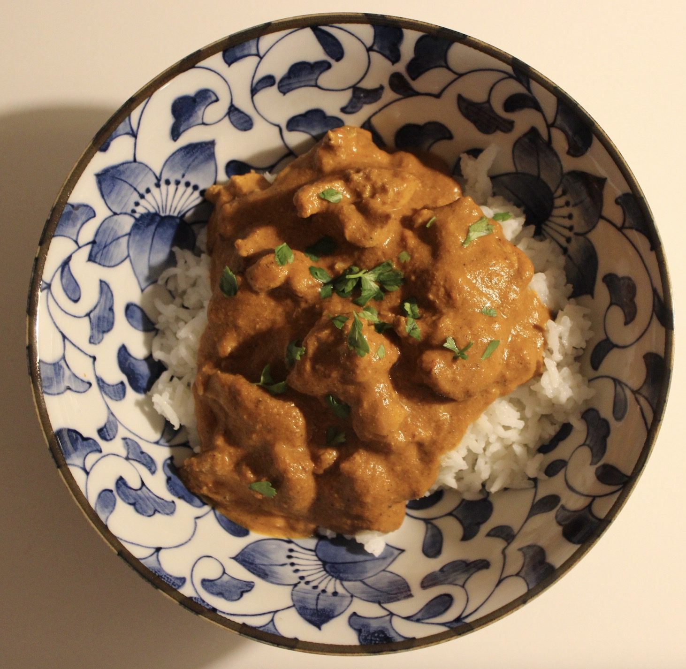

A rich, creamy curry built on a spiced yogurt marinade and a deeply developed tomato base, finished with warming spices and a smooth, tangy depth.
On a Sunday you can take your time with the marinade and let the flavours fully develop,
but it also works well as a quicker midweek version without losing its depth or comfort.
Served with basmati rice, and optionally homemade naan made from just Greek yoghurt and flour
for a simple, soft bread perfect for scooping up the sauce.

4 servings
45–60 mins • High Protein • Base: 4 servings
High protein from chicken supports muscle repair, yogurt provides gut-friendly probiotics, while turmeric, ginger, and garlic offer anti-inflammatory and immune-supporting properties.